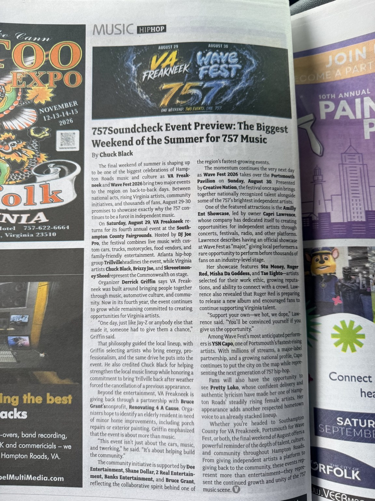

Event Preview: The Biggest Weekend of the Summer for 757 Music
A preview of back-to-back festivals showcasing local performers, national acts and community initiatives.
Read the Full Article
The final weekend of summer is shaping up to be one of the biggest celebrations of Hampton Roads music and culture as VA Freakneek and Wave Fest 2026 bring two major events to the region on back-to-back days. Between national acts, rising Virginia artists, community initiatives, and thousands of fans, August 29-30 promises to showcase exactly why the 757 continues to be a force in independent music.
On Saturday, August 29, VA Freakneek returns for its fourth annual event at the Southampton County Fairgrounds. Hosted by DJ Joe Pro, the festival combines live music with custom cars, trucks, motorcycles, food vendors, and family-friendly entertainment. Atlanta hip-hop group Trillville headlines the event, while Virginia artists Chuck Black, Brizzy Jae, and Skreeetmoney Sheed represent the Commonwealth on stage.
Organizer Derrick Griffin says VA Freakneek was built around bringing people together through music, automotive culture, and community. Now in its fourth year, the event continues to grow while remaining committed to creating opportunities for Virginia artists.
"One day, just like Jay-Z or anybody else that made it, someone had to give them a chance," Griffin said.
That philosophy guided the local lineup, with Griffin selecting artists who bring energy, professionalism, and the same drive he puts into the event. He also credited Chuck Black for helping strengthen the local music lineup while honoring a commitment to bring Trillville back after weather forced the cancellation of a previous appearance.
Beyond the entertainment, VA Freakneek is giving back through a partnership with Bruce Grant's nonprofit, Renovating 4 A Cause. Organizers hope to identify an elderly resident in need of minor home improvements, including porch repairs or exterior painting. Griffin emphasized that the event is about more than music.
"This event isn't just about the cars, music, and twerking," he said. "It's about helping build the community."
The community initiative is supported by Dee Entertainment, Shane Dollar, 2 Real Entertainment, Banks Entertainment, and Bruce Grant, reflecting the collaborative spirit behind one of the region's fastest-growing events.
The momentum continues the very next day as Wave Fest 2026 takes over the Portsmouth Pavilion on Sunday, August 30. Presented by Creative Nation, the festival once again brings together nationally recognized talent alongside some of the 757's brightest independent artists.
One of the featured attractions is the Amilly Ent Showcase, led by owner Capri Lawrence, whose company has dedicated itself to creating opportunities for independent artists through concerts, festivals, radio, and other platforms. Lawrence describes having an official showcase at Wave Fest as "major," giving local performers a rare opportunity to perform before thousands of fans on an industry-level stage.
Her showcase features Stu Money, Ruger Red, Misha Da Goddess, and Tae Eighto—artists selected for their work ethic, growing reputations, and ability to connect with a crowd. Lawrence also revealed that Ruger Red is preparing to release a new album and encouraged fans to continue supporting Virginia talent.
"Support your own—we hot, we dope," Lawrence said. "You'll be convinced yourself if you give us the opportunity."
Among Wave Fest's most anticipated performers is YSN Capo, one of Portsmouth's fastest-rising artists. With millions of streams, a major-label partnership, and a growing national profile, Capo continues to put the city on the map while representing the next generation of 757 hip-hop.
Fans will also have the opportunity to see Pretty Loko, whose confident delivery and authentic lyricism have made her one of Hampton Roads' steadily rising female artists. Her appearance adds another respected hometown voice to an already stacked lineup.
Whether you're headed to Southampton County for VA Freakneek, Portsmouth for Wave Fest, or both, the final weekend of August offers a powerful reminder of the depth of talent, culture, and community throughout Hampton Roads. From giving independent artists a platform to giving back to the community, these events represent more than entertainment—they represent the continued growth and unity of the 757 music scene.
As Published in VEER Magazine
Photograph of the original printed article, including the byline and magazine layout.
